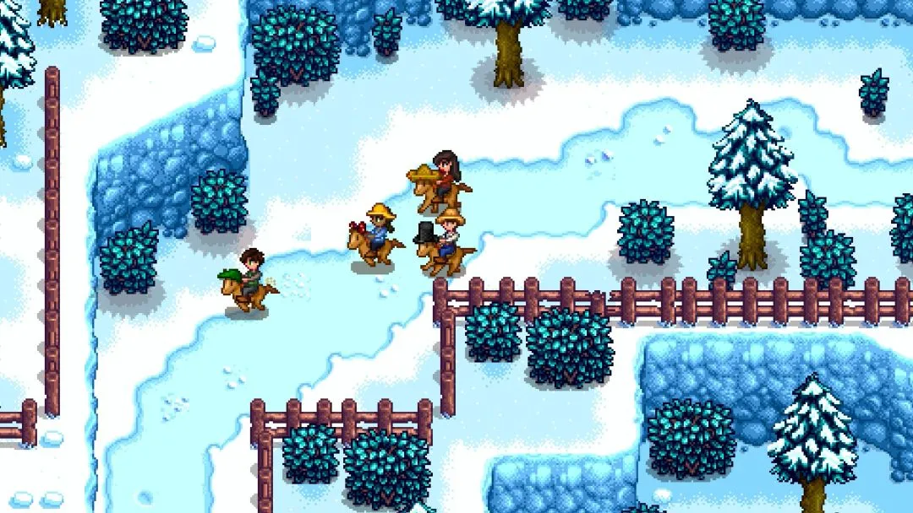
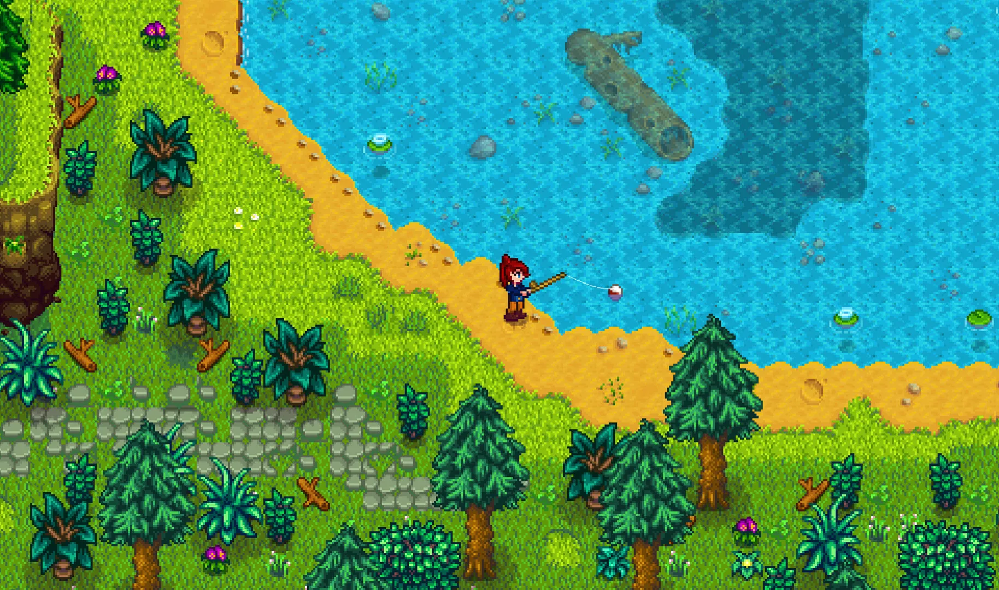
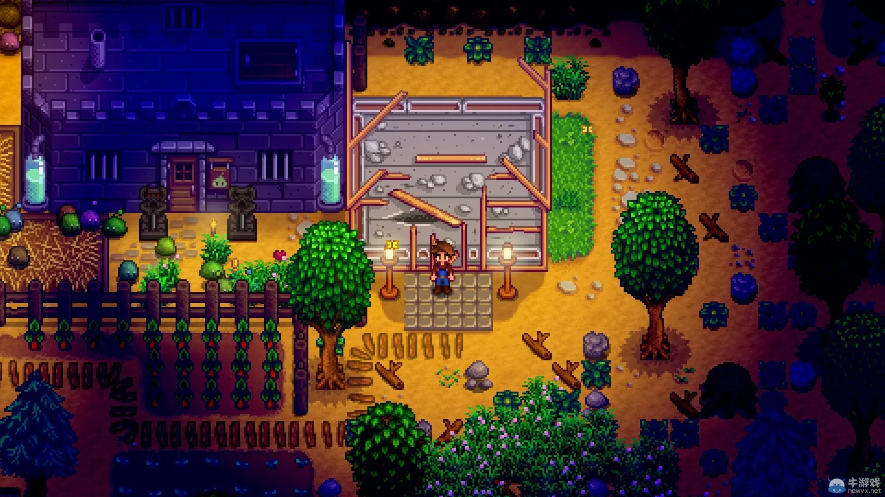

《星露谷物语》（Stardew Valley）是一款由 ConcernedApe（Eric Barone）单人独立开发的农场模拟经营游戏，2016 年正式发售。玩家扮演厌倦了都市生活的上班族，继承爷爷留在星露谷的老旧农场，从此开启一段远离喧嚣的田园人生。
在星露谷，你可以随心安排每一天：春天播种防风草，夏天浇水蓝莓，秋天收获南瓜，冬天则整理道具、规划来年。除了种地，还能钓鱼、养鸡养牛、下矿洞打怪寻宝，或者逛进小镇和居民聊天送礼物——每个人都藏着一段属于自己的故事。


